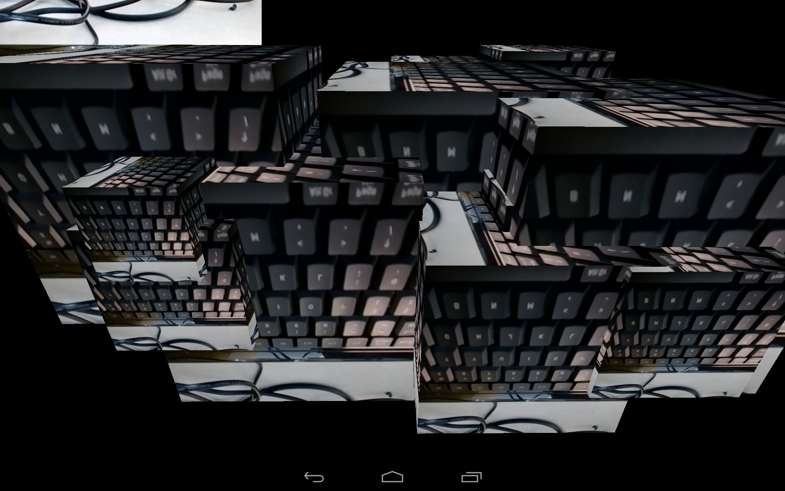

I developed these experiments with the advantages of using mobile platforms in mind (such as mobility, front/back cameras and accelerometers). The aim for both interactives was to utilise the built-in camera to augment an existing sculpture or scene.
Developed using the processing environment, this interactive work randomly generates a primitive sculpture upon execution. The context of the object is strongly altered by using the camera input (mapped as a texture) to pick up the surrounding environment. The result is an accelerometer-navigable space which dynamically changes according to the real-world objects and artefacts the user focuses on.
As a continuation from the previous experiment, I wanted to change the focus of the interaction from the environment to the tablet user. Build using Unity 3D, Sea of Selfies is a fun commentary on ‘selfie culture’ and the disposable commodity these images have become.